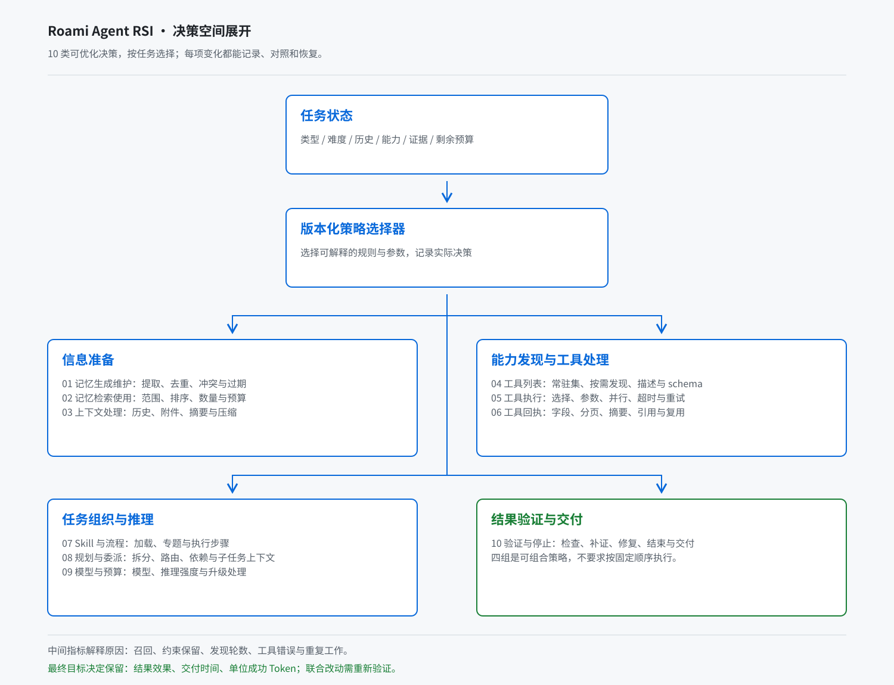

Roami Agent RSI
每日全60项 → 复盘提问 → 隔离修改 → 独立验收 → 应用观察。
实现验收中 · 本地闭环已接入，正式运行尚未启用。

看执行手段与职责表 · 看失败处理与关单条件 · 下载可编辑图
展开详细设计、指标与技术契约
以下保留早期设计与阶段记录；当前实现边界以实施记录为准。修复执行现采用受硬Token上限约束的原生模型；Codex尚未接入自动修复预算。
Roami Agent RSI 方案 · 2026-10-22
状态：首批运行底座已实现并完成设施冒烟；正式测试机、真实模型评测与线上策略发布尚未启用。实施记录。RSI 在本方案中指递归自我改进：Roami Agent 依据执行证据发现问题、提出有版本的改进、在隔离测试机验证，再把通过的策略纳入下一轮基线。首版优化提示、上下文、工具使用与任务编排；模型权重训练不属于首版。
本轮工作分支为 feat/roami-agent-rsi，会话名为“Roami进化方案”。用户所述几台测试机的当前清单尚未出现在会话中；历史北京 / 上海追踪记录仅作架构参考，不能据此推断本次机器、连接授权或配置。
已实现评测 CLI、隔离文件执行、独立判定、A/B 比较、每日预算账本和候选队列；已锁定 4 条公开财务组件样本。实现范围、代码入口与验收证据。
1. 产品设计
目标与优先级
在真实任务完成效果保持或提升的前提下，缩短用户等待，减少完成同等任务所需的 Token。保留质量、时间、Token 三条曲线，不以一个总分抵消质量回退。工具次数、模型轮次、重复检索与重试用于定位原因，不能靠省略必要验证取得高分。
评测分两个范围：Roami Agent 主控自身的接收、理解、路由与回报；用户请求的完整执行链，包括 Worker、专业 Agent、工具、验证、失败重试与最终交付。首页说“已安排”只算接收反馈，不能算任务完成或生成速度提升。
主动研发闭环 · 2026-10-23 修订
每日由RSI自己跑测试，或用临时新想法设计开发实验；像工程师一样看实际行为，提出修改意见并动手修改。用户日常使用记录不是必要输入。参数搜索只是辅助工具，不能用调小几个数代替观察和代码改进。
- 主动选题：正式60项保留20项公开基准、20项真实任务、20项机制回归。每天完整执行60项，不抽样省略。新想法另列开发实验，不替换正式题；每天回顾所有指标及具体日志。
- 观察：读取本轮测试轨迹、产物、截图和实际运行状态，检查重复读取、无效工具调用、上下文丢失、恢复行为和交付质量；区分被测Agent的问题与测试机或判定器的问题。
- 提出修改：记录“行为证据→问题→原因假设→修改位置→预期收益→回归风险”，优先处理可复现失败及高频浪费，不只看总分。
- 实施：在隔离源码工作区修改记忆、上下文、工具目录/执行、Skill流程、路由或验证逻辑；保存补丁与父版本。临时实验仅进入开发区，不向修改器暴露隐藏参考答案，不修改判定标准制造收益。
- 验证与保留：先运行不消耗模型的定向回归，再按预算做必要的同机A/B。失败保留诊断并丢弃候选；通过后归档补丁和证据。改代码不等于自动发布到现用实例，发布仍受独立门禁约束。
测试、观察、提出修改、编码及复核都计入同一owner日Token总预算，多测试机不能各拿一份预算。机制回归优先使用确定性测试；每日完整跑60项；修改后的定向检查属于额外开发实验，不替代当日全量。未用到模型的步骤成本记0，有调用但缺失用量记未知并停止，不补写0。新的开发实验不替换当天60项正式题；纳入正式库存必须版本化替换并说明覆盖变化。
用户故事：即使用户一天没有使用Roami，RSI仍能在已配置机器和预算内主动发现一个可复现问题、提出具体改法、产出可审查补丁，并用运行证据说明保留或撤销的原因。当前评测基础设施已实现；此处完整主动观察与源码修改器尚待接通，不能宣称已形成自主研发闭环。
每日全量执行与回顾
每天完整运行60项，随后回顾每项指标与具体日志，成功与失败均覆盖。质量看断言和产物；时间看有效交付及模型/工具耗时；Token覆盖所有角色、失败、重试和维护。原始日志记录实际请求与输出、工具参数/结果、trace和回归输出。回顾引用文件hash与record/span，并给出待复现的原因假设、修改建议和需要重跑的检查。
已实现规则回顾behavior_review.py，不为基础扫描再调用模型。每轮保存review.json、report.json及逐项log_review；日志缺失即标不完整并阻止晋级，使用未知用量不能宣称节省。整套A/B先预留120个episode与最坏Token上限，预算不足明确阻断，不自动少跑题。规则发现不替代语义原因分析；完整自主源码修改器仍待实现。
出分后的自动化闭环 · 2026-10-23
谁启动、谁复盘、谁修改：定时控制器每天发起；被测Roami Agent做题；独立判定与规则服务算分并检查全部日志；RSI复盘Agent逐项观察、提出问题；控制器确认去重后派发修复；默认由配置好的Codex在独立worktree修改；独立验收服务决定是否通过；发布服务应用；后续每日评测及复盘观察两个合格日周期，控制器依据证据关闭或回滚重开。三个智能体职责使用分离的任务和上下文，日程、状态及关单由程序控制。
架构、职责与执行手段已收敛为图表版总览；运行成本和接入细节默认折叠。角色设计不代表已实现，每台机器A/B为120次执行，应用范围须明确绑定。
状态：本节为待实施的编排契约。现有代码已经覆盖评测、具体日志采集、规则回顾、有限参数提案及策略发布/回滚；持久改进工单、语义诊断、自动派发源码修复、代码候选验证、观察后自动关闭/重开尚未接通。不能把已有报告或参数候选队列称为完整自主研发闭环。
采用Roami内部改进工单作为事实账，复用现有后台任务执行修复。GitHub Issue/PR是可选协作同步：确认且可复现的源码问题可以建一个Issue，补丁关联PR；日常分数波动、未知消耗和未确认假设先留在内部记录。GitHub不可用时内部流程仍能推进。当前外部同步未配置，本轮未执行任何对外Issue、评论、PR或发布操作。
Roami常驻服务（不依赖聊天窗口） → 每日完整60项 + 每项指标与具体日志回顾 → 规则全量扫描 + Agent语义观察 + 原因分类与复现 → 去重/更新内部改进工单 → 自动排优先级 → 持久派发修复任务 → 独立worktree内修改代码/提示/策略 → 独立验证器：定向回归 → 完整60项配对 → 必要的私有晋级验证 → 形成候选版本 → 在已配置范围应用 → 后续每日全量观察 → 证据满足才关闭；修复失败回到诊断，退化回滚并重开
产品与用户故事
用户每天看到60/60执行覆盖、逐次指标/日志/语义回顾覆盖、今天正在修的问题、补丁和前后变化、阻塞原因及下一次动作。关闭聊天窗口后服务继续执行；预算不足、机器离线或无改进提案时，状态仍可追踪。无新提案继续全量测试，不制造虚假提升。
例如观察到同一版本文件被反复读取：先核对是否为必要验证及上下文丢失，复现确属冗余后建立“上下文重建导致重复读取”工单。修复任务在独立分支修改相应模块，提交补丁与回归记录；独立验证确认约束未丢失、质量不退步且总Token改善，应用后继续观察。仅少调用几次工具、提交了PR或执行器声称完成，都不满足关闭条件。
工单状态与证据门槛
| 阶段 | 自动动作 | 推进条件与失败处理 |
|---|---|---|
| observed / diagnosing | 汇总60项的质量、时间、Token和实际行为，分类为Agent、环境、判定器或待确认问题；为原因假设设计最小复现。 | 引用cycle、case、原日志hash与record/span。证据不足保留假设，不冒称缺陷。测试环境错误不得通过修改Agent来掩盖。 |
| queued / implementing | 去重、确定修改范围、验收和预算，再派发已有Roami任务，使用专用worktree与一个活动修复尝试。 | 记录任务ID、父源码版本、授权范围和租约。预算不足进入waiting_budget；启动失败保持待处理，不能因创建Issue就结束。 |
| verifying | 核对真实diff、构建、必要回归及原失败复现；独立验证器复跑完整60项A/B。 | 修复Agent不能修改评分器、隐藏集或自报通过。无法复现、任务成功但没补丁、质量退步或消耗未知均不能晋级。失败的是此次候选，问题工单继续诊断。 |
| ready / observing | 通过已有质量/收益门槛后，在已配置的应用范围发布不可变版本，并继续下一轮全量观察。 | 源码变更使用构建版本和发布适配器；现有四参数策略发布接口不能代替代码部署。需要更广应用权限时保留ready状态，不反复要求日常确认。 |
| closed_fixed / reopened | 建议观察窗口内至少连续两次每日全量通过问题专属验收、无受保护能力退步且测量完整，才关闭。退化自动撤回新版本入口并重开工单。 | 保存修复commit、验证报告、应用版本和观察周期ID。代码已合入或Issue已关闭都不能替代这些证据；重复、误报、撤销另记原因，不计作修复收益。 |
如何避免“工单建了没人推进”
- 持久追踪：每个finding必须关联改进工单，或记录“重复/待复现/无须处理”及理由；同一原因重复出现追加证据和频次，不每天创建新Issue。
- 自动消费：常驻worker消费持久队列，默认每个owner同时只执行一个修复、每天最多推进一个源码候选；具体尝试次数与语义/编码/验证额度由日预算约束。每日正式60项的预算先预留，新实验不能挤占。
- 事件驱动：执行任务结束只触发独立验证，验证结束触发晋级判断，应用后触发观察；每阶段同时保存下一步动作和next_run_at。每项都有负责的worker类型、超时及明确阻塞原因。
- 停机恢复：状态与待派发事件在同一事务落盘；使用幂等键、版本比较和有期限租约。重启后对账已创建任务、补丁、验证与版本，未知写入不重放；过期worker不能覆盖新尝试。
- 自动巡检：扫描缺任务、租约过期、超时验证、待观察及跨日未推进项，恢复可恢复工作；不可恢复时记录具体阻塞、所需信息和下一次检查时间，并纳入每日摘要。失败工单不静默关闭，也不能阻断下一日正式评测。
代码、账本与接入点
复用现有improvement/worker.py承载独立RSI工作槽；dispatch/tasks.py的Tasks.create(key=...)、task.run/task.verify及已有任务状态和执行器作为修复载体。新增自动化编排仍需服务身份、系统任务来源与工作区授权适配，不能假定现有聊天委派授权可直接复用。现有rsi_cycles、rsi_trials和发布记录继续作为实验证据。
improvement/behavior_review.py 已实现：逐项规则回顾与证据索引 improvement/behavior_observer.py 待实现：覆盖每项的语义观察、原因分类、最小复现与新想法 improvement/improvement_items.py 待实现：去重工单、状态迁移、事件、尝试与证据关系 improvement/research_dispatch.py 待实现：持久outbox、租约、日预算和现有Tasks.create适配 improvement/source_revision.py 待实现：干净父版本worktree、范围校验、实际补丁与候选构建 improvement/candidate_checks.py 待实现：控制面执行的回归、源码A/B及独立晋级证据 improvement/release_observation.py 待实现：发布后全量观察、回退、关闭与重开 improvement/issue_sync.py 可选待实现：脱敏Issue/PR镜像，不承担内部编排
拟新增rsi_improvements、rsi_improvement_events、rsi_change_attempts和rsi_outbox。与runtime.db是两个数据库，不能声称跨库原子：先在RSI库原子写状态及outbox，再用owner+工单+尝试版本构造Tasks.create幂等key；任务创建后写回task_id。任一步崩溃均用同key查询/重放创建回执，不重复派发；未知的实际执行仍先对账。
cycle_id → finding_id → improvement_id → task_id
→ candidate_id / commit / patch_hash
→ verification_report_id → release_id → observation_cycle_ids
→ closed_fixed 或 reopened
工单字段至少包含owner、repo、稳定fingerprint、revision、state、priority、evidence_refs、hypothesis、reproduction、change_scope、acceptance、parent_version、task/attempt/candidate引用、budget_reservation、lease/fencing_token、next_action、next_run_at及blocked_reason。fingerprint依据问题机制和不变量去重，变化的日期与测量值仅作证据；无法证明同源的问题不强行合并。
代码A/B需要独立协议：runner与grader版本保持相同，基线和候选各自记录agent_build_hash、commit和patch_hash；代码版本是预登记的实验变量，不能通过篡改环境指纹伪装可比。两组测试环境、模型、数据、标准及记忆快照保持冻结。现有只支持同运行时参数变更的run_cycle/发布逻辑尚需此适配，不能直接当作已支持源码候选。
预算、回顾覆盖与对外同步
规则层完整遍历所有日志，语义层对60项的行为摘要和证据索引逐项回顾，异常及不确定处展开原始记录；分别登记覆盖率，不能用规则已读代替语义已审。语义诊断、最小复现、编码、复核和观察费用均属于同一owner日预算，按阶段预留；剩余额度不足则延期修复，保留当日正式60项。当前规则回顾为0额外模型Token，语义层尚未实施。
确认需要外部协作时才同步Issue，私有日志、参考答案、用户内容和凭证留在内部。Issue只展示脱敏复现、影响、验收、公开安全证据及PR链接；观察验收通过后同步关闭，退化同步重开。外部API失败仅阻塞同步，不丢内部工单；未配置外部同步时自动研发仍可在本地隔离分支推进。
本节验收标准
完成一次从故障注入到自动发现、工单去重、任务派发、真实补丁、独立复测、应用观察和自动关闭的端到端演练，再注入退化证明自动回滚和重开。同时验证：各阶段崩溃/重启不重复建任务，重复事件无副作用，旧租约回报被拒，预算耗尽不会漏掉正式60项，执行器自报成功/PR合入/伪造报告无法提前关单，隐藏信息不会进入修复上下文或公开Issue，GitHub离线不影响内部流程。只有这些证据齐备，才标记“自动化闭环已完成”。
架构图 · 2026-10-22
图中观察、修复和验证分别由复盘Agent、修复Agent与独立验收服务承担，控制器负责启动和交接。按参与者阅读的时序与责任表见角色设计。
使用 excalidraw-diagram-generator 技能绘制。总览展示主动选题、观察行为、实施修改、隔离验证和版本应用的闭环；展开图将 10 类决策归为四组，组间不表示固定执行顺序。蓝色表示执行与评测，绿色表示质量验证与应用，绿色虚线表示通过的策略用于新会话。图示为完整目标架构，实际实现范围以实施记录为准。


下载 .excalidraw 后可拖入 Excalidraw 编辑；两张 SVG 图稿与可编辑源文件随方案保存在本目录。JSON 唯一 ID、全部文本 fontFamily=5、模块无重叠及 SVG 结构已检查，图片预览已逐图目视核对。尚未执行真实模型评测；产品界面目前仅完成隔离组件验收。
决策空间修订 · 2026-10-22
三个最终目标之外，RSI 还需要一层明确的可优化决策。每轮依据任务类型、难度、历史长度、可用能力、执行证据和剩余预算，决定读取哪些信息、展示哪些工具、怎样执行、何时验证与结束。优化产物是一份有版本、能回退的策略；自主测试的轨迹与产物用来发现问题，隔离修改和对照实验用来判断修改是否有效。
将“工具列表”与“工具处理”拆开：前者决定模型看到哪些能力、以什么描述和顺序看到；后者决定实际选择、传参、执行、重试和处理回执。记忆同样拆成内容的生成维护与执行时的检索使用，分别衡量，避免把所有输入优化都归入上下文。
| 决策空间 | 可优化的具体选择 | 中间衡量项 | 必须保留的约束 |
|---|---|---|---|
| 记忆生成与维护 | 何时提取、哪些事实值得保存、事实 / 偏好 / 决策如何组织、去重合并、冲突更新及过期识别。 | 有来源的正确记忆比例、该记未记 / 不该记却记比例、重复及过期比例、写入与维护 Token。 | 当前明确要求优先；来源、所有者范围、删除和遗忘传播不变；记忆不是新授权。 |
| 记忆检索与使用 | 何时不检索、查询改写、任务 / 项目 / 全局范围、召回数量、排序、重排与正文预算；摘要还是按需读原文。 | 标注样本上的召回率 / 精确率、过期命中、检索耗时、注入 Token、对最终回答的帮助与干扰。 | 不得跨越既有访问范围；冲突和来源不能被摘要抹掉；检索命中不等于内容被正确使用。 |
| 上下文组装与压缩 | 历史保留窗口、任务状态与附件选择、摘要粒度、压缩时机、各类信息预算、稳定前缀与增量内容的组织。 | 关键约束 / 事实保留率、遗漏和错误摘要、重复输入比例、组装与压缩时间、完整链路 Token。 | 系统约束、当前任务、必要工具配对和任务来源不能裁掉；压缩与重建的成本一起计算。 |
| 工具列表与能力发现 | 基础常驻集与按需集、分类粒度、检索排序与分页、描述长度、参数说明与示例、何时展开完整 schema。 | 首批目录包含合适能力的比例、发现轮数、目录 / schema Token、选错或找不到工具、非法参数率。 | 只筛选当前角色有权使用的能力；保留完整发现入口、必要参数和副作用说明；目录不是权限执行器。 |
| 工具选择与执行 | 选哪个工具、读取范围、参数构造、可合并调用、互不依赖的读取并行、超时及重试退避。 | 首次调用成功率、无效调用、调用次数、串行深度、工具等待、恢复开销与实际副作用。 | 依赖顺序、写操作幂等、资源租约、取消与未知结果对账不变；不能靠批处理包装隐藏真实工作量。 |
| 工具回执与证据处理 | 全文或摘要、字段选择、分页读取、产物外置、何时读取下一段，以及版本一致时的结果复用。 | 回执输入 Token、证据遗漏、再次读取次数、复用命中 / 失效、摘要错误和最终可验证性。 | 错误、未知状态、关键证据与原始产物引用不得隐藏；变化的状态须按版本与有效期重新验证。 |
| Skill 与任务流程 | 何时加载哪个 Skill、专题按需读取、步骤与提示表达、是否可以复用已有流程、何时跳过不适用步骤。 | 无关 Skill 加载、指令 Token、必要步骤覆盖、工具选用与任务成功率。 | 必须适用的仓库规则和用户要求持续生效；减少提示不能等于删除必要约束。 |
| 规划、路由与委派 | 直接回答或执行、是否澄清、原生 Worker 或专业 Agent、拆分粒度、串并行依赖、委派上下文及完成回调。 | 路由正确率、无必要的澄清、任务切换 / 重复派发、回调轮数、关键路径及子任务总成本。 | 原任务、追加要求、附件、目录与授权完整传递；隔离实验中的并行策略不改变实际会话的授权边界。 |
| 模型与推理预算 | 在可用模型和参数范围内选择模型、推理强度、生成预算；按任务难度决定是否升级处理。 | 推理与输出用量、首字 / 完成时间、按难度分层的错误率及升级收益。 | 更换模型单独对照，遵守数据与模型能力限制；不可只用更短回答替代同等交付。 |
| 验证、停止与交付 | 选哪些额外检查、何时继续搜证或修复、何时请求用户补充、何时结束、如何呈现产物与进度。 | 漏检 / 误判、返工、额外验证成本、首个可用结果时间、重复解释和无产出循环。 | 必要验收始终执行；只有真实证据支持才能宣称完成，最终结果的可用性不降低。 |
中间指标解释原因，最终三个目标决定是否保留策略。例如召回数量少、工具列表短、调用次数低，都不能单独作为奖励；如果导致漏掉历史约束、找不到正确工具或遗漏验证，即使更快也应判失败。召回率和约束保留率使用有已知事实的标注夹具计算，用户线上记录只能提供抽样线索，不能凭模型自述算出这些比例。
策略如何探索与组合
把策略表示为 policy(任务状态) → 决策配置。首版使用可解释的任务类别与阈值规则，不为每一步再增加一次模型判断。例如短问答、长历史查事实、需要外部工具的任务可采用不同的记忆与目录预算；不依赖评测题 ID、隐藏答案或测试机专属捷径。策略选择本身的模型调用、延迟和 Token 也计入成本。
先验证少量离散候选，再扩大范围。例如只调记忆数量与正文预算时固定检索算法；只调检索排序时固定数量和预算。当前自动记忆实现每类检索 limit=8、最终最多 8 条 / 约 2000 个估算 Token，可作为基线；候选数值必须在预算内且先参数化，不把新配置键宣称为已有接口。工具目录目前默认返回 10 项、上限 20 项且可分页，可比较分页大小、排序或描述表达，不能直接隐藏所有后续页。
单因素成立后，专门检查相互作用：记忆召回与上下文预算、工具目录裁剪与发现轮数、回执摘要与再次读取、任务拆分与子任务总成本。对两个因素分别测“基线、只改 A、只改 B、同时改 A/B”，四组独立运行；联合版本只有通过完整验收才晋级，不能把两个单独收益直接相加。优先按失败数量、预计收益和实验成本选择一个空间，避免同时搜索全部参数组合。
记忆是有状态的实验对象：每组从同一脱敏记忆和会话快照克隆，独立写入，组间不共享新记忆或缓存。检索实验固定记忆内容；生成 / 合并策略实验采用相同多轮输入序列，比较最终记忆和后续未见问题的表现。隐藏集执行产生的答案与记忆不回流训练或下一轮候选上下文；已有普通会话记忆保持独立。
首批顺序建议为：工具列表 / 发现与上下文预算；随后工具回执和执行编排；再扩展记忆检索与生成维护，覆盖长期多轮收益；最后根据证据优化路由、推理和额外验证。该顺序是初始排期，真实瓶颈报告可以调整优先级。
二级指标树
| 一级目标 | 二级维度 | 测量项与口径 | 用途 |
|---|---|---|---|
| 速度 | 响应速度 | 请求接收到首段有用内容的时间；另记首字时间和请求排队时间。“收到 / 正在处理”不算有用内容，必要且具体的澄清问题可以算。 | 衡量用户多久看到有效进展。 |
| 速度 | 交付速度 | 接收到满足验收标准的结果在客户端可用的端到端时间，按任务类报 P50 / P95；另记首次产物时间及修复后交付时间。 | 主要速度指标；后台任务等待不能漏计。 |
| 速度 | 模型执行 | 模型轮数、每次请求排队 / 首字 / 解码耗时、可观测的输出 Token 每秒、重试等待。 | 区分请求多、首字慢和生成慢。 |
| 速度 | 工具与编排 | 工具调用次数与耗时、串行依赖深度、委派及结果回报耗时、失败重试、重复读取 / 搜索比例。 | 定位可省步骤与可并行环节；并发 span 耗时不直接相加。 |
| 速度 | 系统与交互等待 | 上下文构建、存储队列、网络与交付耗时；等待用户补充的时间独立记账。 | 同时报自然经过时间和扣除显式用户等待的活动时间。 |
| 最终效果 | 正确性 | 真实状态、计算、代码测试、关键事实和任务目标是否正确。 | 质量分 40%；任务关键断言必须全部通过。 |
| 最终效果 | 完整性 | 逐条核对需求覆盖、约束遵循及必要步骤；新增要求与原要求分别留档。 | 质量分 25%；防止只完成容易部分。 |
| 最终效果 | 可用性 | 文件能读回 / 下载、代码能运行、结构与格式可使用、后续操作清楚。 | 质量分 20%；交付可使用才算完成。 |
| 最终效果 | 证据与可信性 | 来源能核查、陈述和工具回执一致、未完成项标注准确、不虚报成功。 | 质量分 15%；严重虚报属于硬失败。 |
| 最终效果 | 稳定性与边界 | 一次尝试成功率、多次独立执行全部通过比例、用户纠正 / 返工、取消与恢复、越权与误写事件。 | 独立门禁，不用平均质量分掩盖重大故障。 |
| Token | 输入与上下文 | 每次请求实际发送的总输入、非缓存输入、缓存读 / 写；按系统指令、历史、记忆、Skill、工具 schema / 回执作估算归因。 | 定位重复注入与无关上下文；估算归因不冒充服务商计数。 |
| Token | 生成与推理 | 输出 Token、服务商可见的推理 Token、最终交付长度；记录各字段是否包含子项。 | 减少冗余生成，同时保留必要论证和结果。 |
| Token | 额外工作 | 重试、失败尝试、重复委派、结果回报、压缩 / 记忆等关联后台开销。 | 防止把成本转移到子任务或后台。 |
| Token | 单位成功成本 | 整组所有尝试消耗的 Token / 成功交付数；同时报告每次尝试分布与用量覆盖率。 | 主要 Token 指标；成功数为零时记不可计算，不能记零。 |
质量细项按 0～4 档评分，分别映射为 0 / 25 / 50 / 80 / 100 分，Q 为四个维度映射分的加权和。四项均满足要求即 80 分；关键断言全部通过、四项均不低于 3 档且 Q ≥80 才算单次通过。上表为默认权重；代码、PPT、视频、研究和回测使用冻结的任务专属权重与锚点，见 评价标准 v1.1。未登记优秀项时不能事后加分。
代码和状态检查优先采用确定性验证；开放写作、研究报告采用固定评分表的模型盲评，加人工校准。评审不知道哪个是候选版，A/B 顺序随机；模型评审只接收隔离的任务与产物，无执行权限，产物中的指令作为数据处理。分歧超过 1 档、评分临界或可验证事实冲突时进入人工复核，不能让执行者自评决定晋级。
怎样判定“变好了”
- 先过硬门禁：隔离、权限、任务来源、无重复副作用、停止 / 恢复、必要验证、产物可读和真实状态全部通过；超时、失败和取消均保留，不允许只统计成功记录。
- 再过质量门禁：候选与当日稳定基线做配对比较。质量均值差的 95% 置信下界不得低于 -1 分，成功率差的下界不得低于 -2 个百分点；各任务类别也检查回退。以上为首版建议容忍度，基线建立后锁定为标准版本。
- 最后看改进：建议至少满足一项——质量提高 3 分、交付时间 P50 减少 10%、或单位成功 Token 减少 10%；同时其余效率指标回退不超过 5%，质量满足前述门禁。只接受有重复证据的收益，小样本仅列为候选。
- 涉及指标改善的配对置信区间须支持改善方向；按用例聚类重采样，不能把同题多次执行当成大量独立题。首版晋级至少收集 30 个不同用例配对、覆盖每个必测类别和所有适用机器档位；不足时继续积累，不放宽标准。
- P95 只在同任务类、同机器 / 模型 / 缓存档位达到至少 100 次有效观测时作为门禁，并给区间；不足时展示样本数、原始分布和最大值，标“样本不足”。超时作为失败及时间右删失保留；若目标分位落在删失区，标为超过超时界限，不能静默剔除。
有多个通过的候选时优先选择无其他目标退化的方案；存在取舍则展示三项变化及受影响任务类别，由用户选择。每日最多晋级一个组合，晋级前复测组合效果，保留稳定版本和最近一次通过版本。本文示例阈值是提议，不是已经达到的性能承诺。
测试机池与公平对照
每台机器登记 nodeId、连接引用、OS / 架构、CPU / 内存 / GPU（适用时）、运行时 / CLI / 浏览器版本、网络区域、模型服务与参数、可用窗口、资源限制。连接凭证只存私有引用。明确机器是 Agent 宿主、工具执行机，还是本地模型推理机；远程 API 的延迟不能归因于宿主 CPU。
使用同一机器上随机 AB / BA 顺序的配对实验，固定仓库快照、测试数据、模型版本及参数、并发数、工具版本和环境；每次恢复独立文件 / 数据库 / 浏览器状态。冷缓存和热缓存分别评测，不能通过清客户端缓存冒称清掉了服务商缓存。记录限流、机器负载和网络探针；网络故障仍计入真实端到端结果，另列环境诊断，不事后挑选删除慢样本。
跨机按预先固定的任务与机器权重汇总，同时逐机展示，不能把较快机器新增样本当成算法收益。模型变更单开实验，不与提示或编排同时变化。一个方案只在某机器有效时只能形成该档位策略；必测机器离线或模型配置漂移时标“不完整 / 不可比”，该候选不全局晋级。
任务集与每日标准
2026-10-23组合修订：采用公开抽样20项 + 自有40项的60项目标套件。下文80项指已有自建候选规格池，正式60项每天全跑；已锁定 3 条 FinQA 与 1 条 ConvFinQA 组件任务 ID，其余16条公开任务待接入，自有40项已实现配方或回归变体、待验收；正式运行日程在环境和预算就绪后编排。
首批已定义 80 个公开 case 规格：60 个真实任务覆盖编码、调试、测试审查、部署运维、文档 / PPT、Demo、视频、新闻调研、数据分析、股票信息、策略回测和前沿 / 个人实验，每类 5 项；另有 20 项跨场景机制回归覆盖 10 类 RSI 决策。每项有输入、夹具契约、硬断言、产物、评分锚点、证据与资源上限。这是候选规格池；其中40项已有夹具配方或回归变体，其余规格不属于当前60项目标；通用 runner 已实现，尚无这些场景的真实模型分数。
这 80 项均公开，不能伪称隐藏集。正式晋级前另建至少 24 项私有验证与 30 项独立隐藏任务，覆盖适用类别，放在优化器无法访问的位置；目前尚未创建。随机凭证和变体用于防止背答案，但同模板随机变体不算独立任务。隐藏集仅返回聚合结论并定期轮换，禁止将答案或执行生成的记忆回流候选上下文。
固定60项保护已有能力；新挑战来自自主实验、测试失败和新想法，不依赖用户当天使用记录。每日制定的是“今日评测计划”：冻结全量清单、瓶颈、改进目标和预算；评分标准及权重使用有版本的冻结快照。更改标准必须另建版本并同时重跑基线和候选，不允许每天调低门槛宣称进步。
每日运行闭环
- 准备：建议按用户时区每天 02:00 运行，可配置窗口；先核对机器健康、版本、空闲与预算，用 owner + 本地日期 + 标准版本作幂等键。离线后恢复仅补最近一轮，避免堆积补跑。
- 测量：每天完整跑60项，稳定版与一个候选随机AB/BA各一次，共120个episode；不因预算少而省略题目。多轮case整段算一个episode、共用预算。整套预算不足明确阻断；全量跑完也不等于满足独立晋级门槛。
- 回顾：成功和失败的每项指标及具体运行日志都检查，记录hash和record/span引用，再按失败类型及关键路径排序，输出证据、假设、修改建议、预期影响和回退条件。例如重复发现工具、上下文过长、无效重试、委派后又生成一次确认。
- 改进：在隔离 worktree 生成策略包或代码补丁，先过现有回归；筛查后只保留一个候选进入扩大验证。验证 / 隐藏集不得供候选迭代读取；失败的隐藏结果只给聚合原因，过度试探后轮换隐藏集。
- 验证：跨机器扩大配对实验并按需要跨日复测。重试、压缩、记忆、评分模型和候选生成也进入独立的每日总预算；预算不足暂停扩展，不把“未测”写成通过。
- 应用：首版自动生成报告与改进提案，用户可查看差异后应用策略。后续可配置允许自动应用的策略范围；代码 / 依赖 / 权限改动走仓库评审。测试通过不自动部署现用服务。
- 观察：批准应用后先按完整新会话固定版本，灰度范围由用户选择，默认仅测试会话。出现硬失败立即撤回新会话入口；观察窗口建议 24～48 小时，样本不足继续观察。旧会话不切换运行中策略，副作用不通过重放“回滚”。
- 复用：通过的策略与证据成为下一轮起点；每天保留当天稳定版对照，并定期对最初固定基线复测，区分累计收益与服务商 / 环境漂移。无可信收益时结论就是“保持当前版本”。
预算按 owner 设置任务执行次数、总 Token、费用、最长运行时间、单机并发和最大候选数；实际值在首轮测量后配置。未配置预算不启用日常自动优化。预计消耗在启动前检查，执行中按已知用量和剩余上限保守预留；用量未知时停止自动扩展。每机默认并发 1，评测独立于用户 Main 队列，用户请求始终优先。
首批优化方向
| 观察到的瓶颈 | 候选改进 | 必须同时验证 |
|---|---|---|
| 无必要的多轮模型与工具发现 | 按任务发现能力、复用已知目录和结构化回执，删重复确认。 | 未落库不得声称成功；新工具与错误恢复仍可达。 |
| 上下文输入重复或过长 | 精简重复提示、按需读取 Skill、历史压缩与记忆范围筛选、引用外置产物。 | 关键约束、追加要求、附件和记忆来源不能丢。 |
| 串行读取 / 搜索与工具输出过量 | 只并行互不依赖的读取，缩小检索范围，分段读取与结构化回执。 | 证据覆盖、读取遗漏率、峰值并发与额外总 Token。 |
| 错误路由与重复委派 | 改进直接回答 / 原生 Worker / 专业 Agent 路由与任务幂等。 | 目录、原始任务、授权与回报关联正确，复杂任务不因省 Token 降级。 |
| 高推理成本与重试浪费 | 在支持的参数范围内按难度选择推理强度，识别不可重试错误。 | 推理题、长链路和故障恢复质量；换模型作为独立实验。 |
Roami Agent 的入口与报告体验
首页主对话仅在有可信结论或需要决策时出现一句摘要，例如“今日评测完成：质量持平，交付耗时下降 12%，Token 下降 9%，有 1 项改进待查看”（示例数据）。没有结论时不发送空日报。完整报告从现有消息与首页更多菜单的“持续改进”进入；桌面入口归右侧工作区 header，不增加第四个工作区 Tab，手机使用 URL 管理的 MobileSubPage 二级页，单返回栏、单滚动区。
报告先展示标准版本、覆盖机器、样本量、三个目标与基线差异、是否可比和是否已应用；再展示失败用例、候选差异和执行证据。支持“查看改进 / 应用 / 暂停 / 恢复版本”，执行日志折叠。没有配置机器时显示“添加测试机后开始评测”。复用设计令牌、i18n、可见性更新与事件通知；历史报告不轮询。此轮仅定义交互，未改前端，不宣称桌面或手机验收完成。
2. 用户故事
- 我登记几台测试机与可用时段后，系统每日使用同一标准比较，能看出每台机器及整体的变化。
- 我交代研究、编码或文档任务，评测核对实际来源、代码与文件，而不是依据 Agent 声称完成。
- 我能把等待拆成模型、工具、排队与验证时间，知道慢在哪里；减少工具调用不能牺牲结果。
- 我能知道改进具体改变了记忆、上下文、工具列表还是执行策略，并看到对应的失败与收益；长对话中的效果不会被短问答平均值掩盖。
- 我能看到完整链路实际 Token 和用量缺口；从 Main 转移到 Worker 或后台的消耗不会消失。
- 我能查看系统提出的单项改进及失败证据，决定是否应用；日常使用不被测试挤占，原会话保持策略一致。
- 当机器离线、预算耗尽或候选变差时，系统保留当前稳定版，解释原因，并支持恢复。
3. 技术设计
已核对的基础与缺口
scripts/dev/agent-acceptance/已有隔离实例、真实任务、附件 / Skill / 记忆及产物证据校验；scripts/dev/bench/agent-main-latency.py已有 Main 基础延迟采样。前者含历史日期目录及实例约束，后者是模型基础题，需抽取适配接口，不能直接当成每日全能力评测器。observability/execution_traces.py与core/loop.py已保存上下文、模型轮次、首段文字、重试、工具与任务链路信息，可复用 turnId / taskId / runId。providers/request_policy.py:normalized_usage已有 inputTokens、outputTokens、cacheReadTokens、cacheWriteTokens 与 retryUsageKnown。不能保证已统计失败 HTTP 尝试和外部 CLI 的完整用量；新增聚合必须保留 unknown / null 与覆盖率。- 当前 trace 起点为 Python 接收，终点为 Main 回复落库；Go 入口、客户端收到 / 可用时间、后台记忆的独立开销尚需补齐。补齐前报告明确标注“服务端时间”，不能冒称完整用户等待。
dispatch/scheduler.py、dispatch/schedule_clock.py与replies/proactive_jobs.py有持久任务、本地日期和受限后台处理模式；没有现成 RSI 日程、跨机配对实验或策略自动晋级器，均为拟新增。
拟新增模块及边界
agent-runtime/src/roami_agent/improvement/
contracts.py 标准、机器档案、用例、策略包及运行记录协议
measurements.py 关联 trace，聚合时间与实际用量，保留覆盖率
grading.py 关键断言、产物检查、盲评与人工复核状态
behavior_review.py 每项指标与具体日志规则回顾、证据引用及修改建议（已实现）
behavior_observer.py 深层语义原因诊断与新实验设计（待实现）
source_revision.py 隔离源码修改、补丁归档与定向回归（待实现）
experiments.py 用例夹具重置、随机配对、机器分层和结果比较
daily_cycle.py 每日幂等、持久阶段、预算预留及中断恢复
proposals.py 瓶颈分析、单因素候选与策略差异
policy.py 可调参数、按任务选策略、版本与适用范围校验
decisions.py 决策配置及选择结果记录，关联实际耗时与用量
releases.py 晋级门禁、会话固定版本、应用与回退
reports.py 三目标趋势、证据引用与简短消息
scripts/dev/agent-evaluation/
run.py 显式配置下的评测入口，复用并抽取现有验收逻辑
machine_runner.py 指定节点的隔离实例与精确资源回收
backend/api/agent-improvement.go
已有所有者鉴权与节点网关后的 RSI 入口
frontend/src/components/agent/
AgentImprovement.tsx 报告与可审阅策略差异，复用现有二级页结构
控制面由运行时负责计划、预算、评级与提案；机器 runner 执行完整任务并回传脱敏测量与受保护产物引用。复用节点连接及鉴权，初期可先以显式指定机器的 CLI 调度落地；跨节点传输协议和资源租约须在实施时对照现有节点接口确认，不预设已有远程 RSI 接口。
决策参数与现有模块衔接
记忆生成维护衔接 memory/jobs.py；检索衔接 retrieval/memory_search.py 与 context/remembered.py；上下文衔接 context/prompt_builder.py、main_history.py 和 projection.py；工具列表与发现衔接 tools/foundations.py 的 ToolDirectory 及 tools/registry.py；执行与回执衔接 core/loop.py 及相应工具处理器；路由衔接 dispatch/routing.py，模型参数衔接 protocol/model_routes.py。这些是已存在的扩展位置。首批隔离实验已接入记忆条数 / Token 上限、近期上下文和工具目录页大小；其余决策维度的策略适配尚未实现。
拟为每个可调参数声明 domain、类型、允许范围、默认值、适用任务、依赖项、额外成本和保护条件。策略只通过经过校验的适配器生效，不把任意 Python / Shell 表达式作为参数运行；角色授权、所有者过滤、遗忘、幂等、验收器、隐藏集和评分标准不在优化参数中。参数表达、工具描述和流程代码的变更分别记录为配置、提示、代码候选，不假定所有优化都能热更新。
每个决策事件记录 strategyVersion、任务阶段、可见状态特征、选用规则、决策空间、实际参数、候选集版本、输入对象版本、相关请求及 trace ID；随后关联工具结果、用量与质量检查。只保存简短选择类别与结构化事实，不采集模型私有思维链。记忆正文、用户内容和工具载荷沿用既有访问控制，通过引用按需查看，普通报告只显示聚合信息。
决策事件只能解释“这一轮选了什么”，不能证明该选择带来收益；因果结论仍来自冻结条件下的配对实验。若后续增加自学习的选择器，需独立记录训练数据范围、策略与随机种子，在隔离环境评测后发布；不能边改在线规则边把同一批用户结果当成公平对照。
60项正式任务（每天全跑） / 额外受限开发实验 → 冻结标准与今日预算 → 在测试机主动运行 → 观察真实行为、轨迹与产物 → 提出有证据的修改意见 → 隔离修改源码或策略 → 定向回归 → 必要的同机A/B → 质量门禁与时间 / Token 对照 → 归档补丁、结论和失败 → 通过晋级后应用 → 下一日以已验证版本继续实验
数据、时间与 Token 契约
拟在已有 Agent runtime.db 的迁移体系新增 rsi_standards、rsi_machine_profiles、rsi_cases、rsi_cycles、rsi_trials、rsi_grades、rsi_proposals、rsi_releases；owner 为所有查询边界。大产物沿用 artifact_store，以内容 hash 和来源记录关联，不复制凭证。策略包记录 parentVersion、代码 commit、prompt / Skill / 路由参数 hash、模型参数和允许变更字段；提交时不可变，改变一项即新版本。
Trial {
cycleId, ownerId, caseId, caseVersion, variantSeed, pairId, trialId,
machineId, environmentHash, standardVersion, strategyVersion,
modelRouteVersion, graderVersion, cacheMode,
decisionEventRefs, memorySnapshotHash, policyConfigHash,
rootRequestId, turnIds, taskIds, runIds, traceRefs, artifactHashes,
outcome: passed | failed | timed_out | interrupted | infra_failed,
quality: { hardChecks, dimensions, score, reviewState },
time: { acceptedAt, firstUsefulAt, deliveredAt, activeMs, userWaitMs,
serverElapsedMs, clientElapsedMs, criticalPath, timingCoverage },
usage: { inputTokens, outputTokens, reasoningTokens, cacheReadTokens,
cacheWriteTokens, retryUsageKnown, coverage, estimatedBreakdown },
process: { modelRequests, toolCalls, retries, duplicateReads, serialDepth }
}
单进程耗时使用单调时钟；UTC 时间戳供关联与显示，本地时区仅用于每日计划。跨节点传播 trace / pair ID，不直接相减未同步机器时钟。客户端同一时钟测量从提交到可用事件；最终交付以产物验证和可用结果为准，必要用户等待由明确状态进入 / 离开事件界定。关键路径基于因果与等待关系计算，保留队列间隙与未知区间。
以 provider 适配器声明字段包含关系：总量用互不重叠的输入与输出字段计算，缓存读通常是输入子项，推理通常是输出子项，不能再加一遍；缓存写若未包含在输入，则按该 provider 明确单列合并。跨 tokenizer 的模型只作分层结果，不用 Token 数直接比较智能体效率；费用另按固定版本价格表计算。
每个实际模型请求使用唯一请求身份聚合，Main、所有子任务、验证、回报、重试均纳入；异步压缩 / 记忆按触发任务归属到可配置的结算窗口，超窗尚未结束标“未结算”，不得用于完整 Token 晋级。共享开销独立列出分摊规则，无法归属则展示未分配总量。候选生成与评分 Token 计入 RSI 自身开销，不混进任务运行效率。未知用量不得当作零；完整 Token 优化结论要求两边链路用量完整，部分已知只给局部趋势。
统计中另报成功、失败和基础设施故障数；整组 Token / 成功数包含失败消耗。工具调用统计同时保留宿主可见调用数和可观测子操作数，批处理不因封装而假装只做了一步；不透明 CLI 内部操作标未知。重复读取须结合目标、版本与返回内容 hash 判断，不能把合理的重新验证算浪费。
日程、接口与恢复
拟复用 jobs 表增加 rsi.cycle 阶段作业，独立限额，不把重型评测挂在 Main turn；扫描只调度到期阶段，耗时工作在 runner。阶段为 planned、running、grading、proposed、awaiting_apply、observing、settled；可进入 budget_exhausted、incomplete、paused 或 failed，并保存恢复游标。跨机任务使用租约与 fencing token，过期 runner 的回报只留审计，不覆盖新尝试。
重启后先核对 runner、私有实例与已经产生的副作用，结果未知时标 interrupted 并人工或只读对账，不自动重放写操作。预算在发起请求前事务预留、结束后结算；重复入队不重复消耗，真实重试仍消耗。所有状态更新和报告去重以 cycle / trial / stage 身份保证幂等。
- 拟增 GET /api/agent/improvement：当前标准、策略、每日状态与最近结论。
- 拟增 GET /api/agent/improvement/reports/{cycleId}：分机 / 分类配对结果、覆盖率、失败与产物引用。
- 拟增 PUT /api/agent/improvement/config：机器引用、时区、时间窗口、预算与自动应用范围，使用修订冲突校验。
- 拟增 POST /api/agent/improvement/runs：显式开始一轮，使用幂等请求键；预算或环境未就绪明确拒绝。
- 拟增 POST /api/agent/improvement/proposals/{id}/apply，以及 pause / resume / rollback 动作；核对所有者、策略父版本和门禁，过期提案不能覆盖新策略。
报告只读通过现有节点感知 API；进度沿用事件与页面可见性更新，不增加每任务轮询。标准、隐藏集、grader 和预算规则由控制面保护；候选执行者不能编辑验证器、放宽超时、删除失败或扩大自身权限。测试 runner 仅接收声明过的用例与策略包，测试实例必须通过 scripts/dev/isolated-roami.sh 创建与清理，不能操作用户 live tmux、账户或浏览器页面。
4. 实施顺序与验收
- 阶段 A：核对机器和任务、冻结第一版标准，补齐测量与用量覆盖率，建立至少 3 个独立日的稳定基线。交付按机器 / 任务分类的基线与可复跑任务集；没有基线时不声称优化。
- 阶段 B：每日运行、固定回归与滚动挑战、瓶颈报告、人工可审阅提案。先在单机验证再扩至指定机器池；样本量和预算以实际测量确定。
- 阶段 C：单因素候选、独立盲评、隐藏集与扩大配对试验、策略版本与一键恢复。先由用户应用，验证观察与回退闭环。
- 阶段 D：在用户配置的范围内自动应用低风险策略，持续复评并定期升级挑战集；代码修改仍形成可评审补丁。只有前阶段证据充分才启用下一阶段。
自动验收必须覆盖：指标缺失 / 缓存去重 / 重试用量、异步子任务归属、并发时间不双算、失败计入、机器漂移、用例泄漏、评分顺序偏差、标准不可被候选修改、跨日幂等、预算耗尽、重启对账、租约过期、策略冲突、灰度与回退，以及效果下降却更快 / 更省的候选被拒绝。构造一条确定已知耗时与 Token 的夹具链，核对聚合账与原始记录一致；随后用真实模型与真实产物验证，模拟测试不替代能力结论。
决策空间验收增加：记忆冲突 / 过期 / 遗忘、跨组记忆写入污染、长历史压缩后关键约束保留、目录未选中正确工具时可继续发现、schema 精简后参数仍完整、回执摘要不丢失败、写工具未知结果不盲重试、参数越界拒绝，以及单独改 A/B 有效但联合导致退化时拒绝发布。记忆维护的长期收益用相同多轮序列和后续未见任务评估，不能只看当前轮节省量。
实施运行时代码后执行仓库 full 门禁和受影响回归；前端实施后执行规定的全部前端检查与桌面 / Android 真机验收。性能验收保留配对原始结果、环境快照、失败与置信区间。报告截图放临时目录或 PR 的 pr-shots 分支，不提交一次性截图进 main。
启动前需要补齐：测试机清单与连接方式、优先任务样本、每日预算和可用时段；自动应用范围可以先保持仅提案。当前交付止于本方案，不启动付费模型评测或改动现用服务。
5. 依据与本轮核对记录
开源做法深度调研 固定了 19 个仓库快照和 54 份文件定位，比较 GEPA、ACE、AFlow / EvoAgentX、DGM、OpenEvolve、Agent Lightning 及办公 / 媒体 / 金融基准；来源清单 保留 commit 和文件 hash。原方案据此补充 80 项 case 与标准 v1.1。本轮只完成材料与规格核对，未复现外部基准，也未运行这 80 项真实任务。
源码核对覆盖现有验收脚本、Main 延迟脚本、执行追踪、用量规范化、任务调度、本地日期、主动消息与首页二级页。方法参考 Anthropic：Demystifying evals for AI agents 关于实际结果与执行记录分开验证、重复试验及代码 / 模型 / 人工组合评分的说明。指标权重、阈值、机器配对、预算和应用策略是本提案的设计选择，需用本项目基线校准。